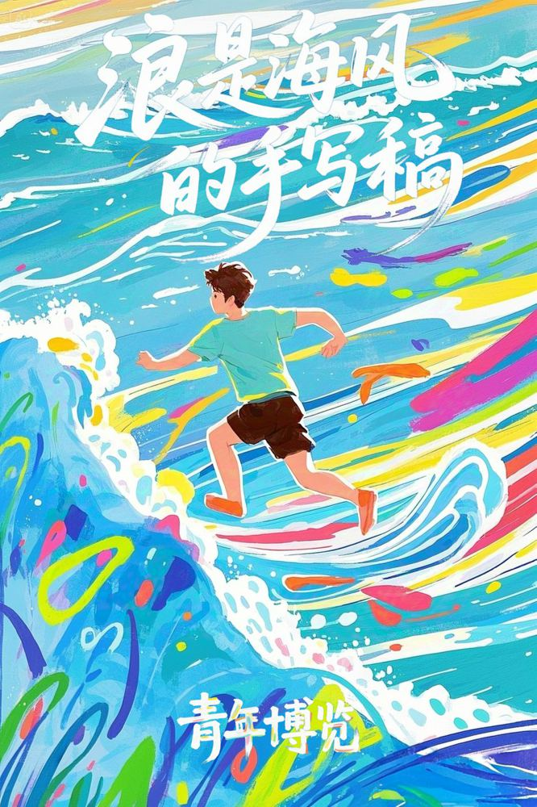
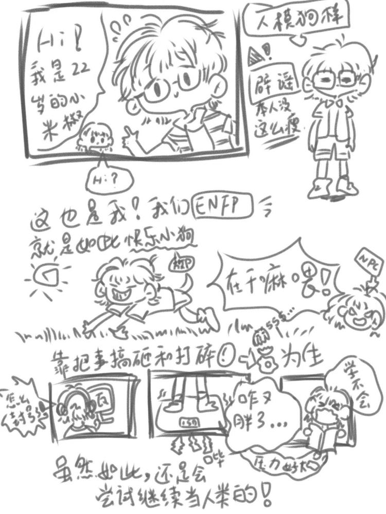

01
把海洋意象变成适合社交传播的系列视觉。
求职方向 · 产品经理 / AI 产品
你好，我是徐铭杰。
用内容理解人，用数据梳理问题，
用 AI 把想法变成可以体验的东西。

01 / SELECTED WORK
从一张海报到一个产品。
每个作品，都是一次具体的尝试。
把海洋意象变成适合社交传播的系列视觉。
让文学意境与季节色彩，在同一张画面里相遇。
把博弈搜索的判断过程，做成可以体验的互动。
校园、运动与人文纪实。把注意力留给真实的人。
参与需求调研与多模式美育方案，连接线上课程和线下体验。
从地方故事出发，参与选题、文章和推广活动。
02 / A LITTLE ABOUT ME

保持好奇，不停止动手。我的经历，发生在内容、
人和技术交汇的地方。
我学习数据科学与大数据技术，也做过公众号内容、活动策划和摄影。从整理选题、走进活动现场，到参与问卷和访谈，这些经历让我开始关注：一个想法，怎样才能被理解、被使用？
现在，我希望向产品经理 / AI 产品方向发展。用既有的内容和数据背景理解场景，再通过 AI 辅助开发，把方案变成能讨论、能验证的原型。
青年融媒体中心 · 影像相关学生工作
信息学院宣传中心 · 采编部部长
少儿美育项目 · 团队成员
海沧青年 · 专栏策划实践
AI 辅助开发 · 产品原型与个人实验
公开代码和实现记录保留在 GitHub
经历依据本人提供的简历与作品集整理。案例中的产品化思考为本次复盘，未将团队成果表述为个人独立成果。
03 / HOW I THINK
我希望在产品工作中坚持的方式
从访谈、内容反馈和实际操作中找到具体问题，区分自己的猜测与用户的需要。
先画清流程，做出最小原型，让抽象方案变成可以体验和讨论的东西。
记录来源、实现和边界。没有验证的指标不当作成果，没有完成的接入不当作能力。
04 / LET'S TALK
正在寻找产品经理 / AI 产品方向机会。
欢迎聊聊产品、内容，以及能一起做出的改变。